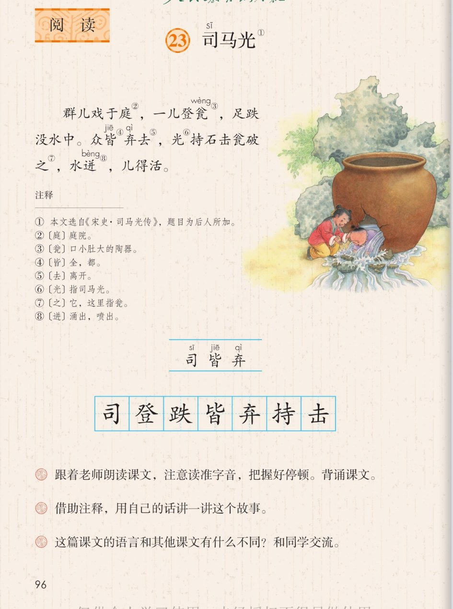

×
🔊 手机听不到声音怎么办？
① 先把手机
媒体音量调大 ，确认没开静音、没连蓝牙耳机；在微信里打开的，点右上角「⋯ → 用浏览器打开」。
② 还是没声音？到应用商店免费下载
Microsoft Edge 浏览器 （它自带朗读发声），用它打开本页面就能出声。
③ 换了 Edge 仍然没声音，说明这部手机的
硬件/系统不支持 网页朗读（多为老旧机型）；近几年买的新手机一般都能正常播放。
→ 打开声音自检
📖 第 23 课《司马光》· 有声图文带读
统编版语文 · 第八单元·阅读 · 课本 P96 · 选自《宋史·司马光传》 · 我们的第一篇文言文 · 素养升级版（对标 2022 课标第二学段）
文言文 1 篇
素养目标 4
会认字 3
会写字 7
听写词 12
深入理解 8 题
本课本领 借助注释读懂文言文·带着问题默读
🎧 文言文这样学（可随时点任意一句、一个字、一个词单独听）： ① 听读课文 ——一句一句读，注意文言文的停顿：群儿，戏于庭；再试着自己默读 ，带着问题想：别的孩子跑了，司马光是怎么做的？② 学字词 ——3 个会认字、7 个会写字，点一个读一个。③ 词语·听写 ——听写 12 个词（读两遍→你写→报答案→听示范句），再听 4 组近义词辨析。④ 深入理解 ——8 道题（认知 / 理解 / 运用 / 拓展），先想后看。⑤ 背诵与讲故事 ——按故事画面顺序听，再听小老师的背诵窍门和讲故事员的白话故事。🌟 课后要求（教材原话）：跟着老师朗读课文，注意读准字音，把握好停顿。背诵课文。
📌 本单元语文要素 ——人文主题：美好的品质，犹如温暖的阳光，带给我们希望和力量；阅读：学习带着问题默读，理解课文内容 ；习作：学写一件简单的事 。
🀄 文化自信
🀄 文化自信
学习我们小学阶段的第一篇文言文，选自《宋史》，感受中华优秀传统文化，了解古人的智慧。
🗣 语言运用
🗣 语言运用
认识 3 个生字、会写 7 个字；借助注释读懂文言文，积累文言词句。
💡 思维能力
💡 思维能力
学习带着问题默读，理解课文内容；能对比文言文和现在说话、写话的不同。
🎨 审美创造
🎨 审美创造
感悟司马光遇事沉着冷静、机智勇敢的美好品质，获取精神力量。
点 ① 听整篇
🔁 跟读模式：关
👁 隐藏注音（自测用）
字卡上的拼音标的是本课要认的字，读音来自课本生字表
🎤 朗读要求（老师标准） 没 在读“淹没”时读第四声；把握好停顿 ：群儿 / 戏于庭，一儿 / 登瓮——先分清“谁、做什么”；司马光是怎么救人的 ；背诵课文 ——按故事的顺序背。
🤫 默读小提示（带着问题默读——本单元新本领） 听读 ——点句子听老师读；第二步 带着问题默读 ——不出声、不指读，先想“司马光是怎么救人的”，再读课文找答案；第三步 朗读背诵 ——读准字音、把握停顿，背下来。
①
司马光 选自《宋史·司马光传》，题目为后人所加
群儿戏于庭，
一儿登瓮，
足跌没水中。
众皆弃去，
光持石击瓮破之，
水迸，
儿得活。
📌 这篇文言文讲：一群孩子在庭院里玩耍，一个孩子失足跌进了大瓮；别的孩子都吓跑了，司马光拿起石头砸破瓮，水流了出来，孩子得救了。
🤔 想一想（点我可跳过）
点一张图，听读整页

第 96 页 · 司马光 / 注释与课后练习
📖 人教版《语文》三年级上册 · 课本第 96 页 · 图片仅供个人学习，版权归人民教育出版社所有
读懂文言文的第一帮手
📝 《司马光》注释（P96）
🔊 课后题 1
💬 课后题 2
🌟 课后题 3
点一个字，听读音、词语和课文句
结构、部首、笔画与书写提示为通用规范，供参考，以教材和老师的指导为准
司sī
司马光
半包围 · 口 · 5画
横折钩的折要正，里面的口写在正中偏上，先写外框再封口，笔顺是横、折、横、竖、折、横、口——按老师示范的笔顺写。
登dēng
登上
上下 · 癶 · 12画
上面的癶字头撇捺分开像两只脚，下面是豆，各部分写紧凑，重心稳住。
跌diē
跌倒
左右 · 足 · 12画
足字旁最后提画要写得斜而有力，右边的失字撇捺舒展，左窄右宽。
皆jiē
人皆知之
上下 · 比 · 9画
上面是比字，左右两边不要太宽，下面的白字要扁，托住上面。
弃qì
放弃
上下 · 廾 · 7画
上面的云字写得扁，下面的廾字撇竖分开托住上面，不要写成开。
持chí
支持
左右 · 扌 · 9画
提手旁写窄，右边的寺字三横间距均匀，竖钩要正，左窄右宽。
击jī
击掌
独体 · 凵 · 5画
先写二，竖写在正中，再写竖折和竖，最后两笔要对称托住上面。
点一行，听读这一组词语
司 司马光 公司 司机
登 登上 登高 攀登
持 支持 坚持 持枪
击 击掌 打击 射击
读两遍 → 你在纸上写 → 报答案 → 听示范句
准备听写 · 共 12 个词
○ ○ ○
点下面的「开始听写」，听到一个词就写一个词。
▶ 开始听写
🔁 再读一遍
👁 看答案
点词听读，点句子听示范句，再自己说一句
1 司马光 本课词
示范句：司马光砸瓮救人的故事，流传了上千年。
✏️ 我也能说：谁做了什么事。
2 司机 本课词
示范句：出租车司机开车很稳。
✏️ 我也能说：谁开车怎么样。
3 登上 本课词
示范句：他登上高高的土坡往下看。
✏️ 我也能说：谁登上哪里。
4 登高 本课词
示范句：重阳节，人们喜欢登高远望。
✏️ 我也能说：谁登高做什么。
5 跌倒 本课词
示范句：弟弟跑得太快，跌倒在地上。
✏️ 我也能说：谁跌倒了。
6 跌落 本课词
示范句：树叶从枝头跌落下来。
✏️ 我也能说：什么跌落下来。
7 人人皆知 本课词
示范句：司马光的故事人人皆知。
✏️ 我也能说：什么人人皆知。
8 放弃 本课词
示范句：遇到困难，我们不能轻易放弃。
✏️ 我也能说：谁不放弃什么。
9 嫌弃 本课词
示范句：我们不能嫌弃比自己小的同学。
✏️ 我也能说：谁不嫌弃谁。
10 支持 本课词
示范句：同学有进步，我们要支持他。
✏️ 我也能说：谁支持谁。
11 击掌 本课词
示范句：我们击掌庆祝比赛胜利。
✏️ 我也能说：谁和谁击掌。
12 冲击 本课词
示范句：海浪冲击着礁石。
✏️ 我也能说：什么冲击着什么。
相同点 / 不一样在哪 / 各造一句
皆 — 都
相同：都表示全部、全都。
不一样：皆 是文言用词，组词：人人皆知、比比皆是；都 更口语、常用。
皆：众皆弃去。
弃 — 扔
相同：都可以表示不要了、丢下。
不一样：弃 是书面语，组词：放弃、嫌弃；扔 更口语，多指具体动作。
弃：众皆弃去。
持 — 拿
相同：都表示用手握着。
不一样：持 是书面语，组词：支持、坚持；拿 更口语、常用。
持：光持石击瓮破之。
跌 — 摔
相同：都表示身体失去平衡倒下。
不一样：跌 多指失足跌倒、跌落；摔 更口语。
跌：足跌没水中。
文言词今译 庭＝庭院 瓮＝口小肚大的陶器 皆＝全，都 去＝离开 之＝它，指瓮
文言句子今译 群儿戏于庭＝一群孩子在庭院里玩耍 水迸＝水涌了出来
复姓司马 司马是复姓，由两个字组成的姓。诸葛、东方也是复姓
美好品质 沉着 冷静 机智 勇敢 遇事不慌
点一张卡，听一听
第八单元我们要学习带着问题默读，理解课文内容 。《司马光》是我们小学阶段的第一篇文言文 ——短短三十个字，藏着一个机智救人的故事。带着问题默读，借助注释，你就能读懂它。
📖 方法一·借助注释
注释告诉我们：庭是庭院，瓮是口小肚大的陶器，皆是全、都——注释是读懂文言文的第一把钥匙。
❓ 方法二·带着问题默读
默读时先问自己：别的孩子都跑了，司马光是怎么做的？再读课文找答案——这是本单元的新本领。
🔄 方法三·和现代文比一比
文言文每句话特别短：群儿戏于庭，五个字就是一群孩子在庭院里玩耍——一对比，就知道文言文多么简练。
🗣 方法四·用自己的话讲故事
借助注释，把每一句翻成现在的话，再连起来讲一讲——这正是课后题要我们练的本领。
💎 新鲜词·文言词
之，指瓮；去，是离开；皆，是全都——这些词的意思和现在不太一样，要多读几遍记住。
🔥 圈画交流
把你觉得最难懂的词圈出来，用查注释、问老师、联系句子的方法弄懂它。🌈 方法不唯一。
标「答案不唯一」的题，说得有道理都对
认知 这篇课文选自哪里？题目是怎么来的？看解析
🤔 想一想
解析：
本文选自《宋史·司马光传》，题目“司马光”为后人所加——注释①写明了。
🌈 答案不唯一，说得有道理都对
认知 注释里“庭”“瓮”“迸”分别是什么意思？看解析
🤔 想一想
解析：
庭，庭院；瓮，口小肚大的陶器；迸，涌出、喷出——都是理解课文的关键词。
🌈 答案不唯一，说得有道理都对
理解 借助注释，用自己的话讲一讲这个故事。（课后题2）看解析
🤔 想一想
解析：
一群孩子在庭院里玩耍，一个孩子爬上大瓮，失足跌进水里。别的孩子都吓跑了，司马光拿起石头把瓮砸破，水流了出来，孩子得救了。🌈 讲得完整、顺序清楚就好。
🌈 答案不唯一，说得有道理都对
理解 这篇课文的语言和其他课文有什么不同？（课后题3）看解析
🤔 想一想
解析：
这是文言文，每句话特别短：“群儿戏于庭”五个字就写了一群孩子在玩；用词简练，要借助注释才能读懂。🌈 能说出“很短、是古人写的、要翻译”都对。
🌈 答案不唯一，说得有道理都对
理解 “众皆弃去”和“光持石击瓮破之”，一跑一留，你觉得司马光是个怎样的孩子？看解析
🤔 想一想
解析：
别的孩子慌得跑掉了，司马光却留下来想办法砸瓮救人——沉着、冷静、机智、勇敢。🌈 说出“不慌张、爱动脑筋”都对。
🌈 答案不唯一，说得有道理都对
运用 跟着老师朗读，读出停顿：群儿/戏于庭，一儿/登瓮，足跌/没水中。众/皆弃去，光/持石/击瓮/破之，水迸，儿/得活。（课后题1）看解析
🤔 想一想
解析：
停顿口诀：先分清每句“谁、做什么”，在谁和做什么之间稍稍停一停；背诵时也按这个节奏背。
🌈 答案不唯一，说得有道理都对
运用 借助注释，用自己的话说说“光持石击瓮破之”的意思。看解析
🤔 想一想
解析：
司马光拿着石头把瓮砸破——“光”指司马光，“之”指瓮，一个字一个意思，翻成现在的话就通顺了。
🌈 答案不唯一，说得有道理都对
拓展 你还读过哪些古人小时候机智勇敢的故事？和同学交流。看解析
🤔 想一想
解析：
比如《曹冲称象》《孔融让梨》《王戎不取道旁李》等。🌈 答案不唯一，说出故事名和你的想法就很好。
🌈 答案不唯一，说得有道理都对
💬 背诵支架：先 记住故事顺序——玩耍、跌进瓮、都跑了、砸瓮、得活 → 再 按停顿一句一句连起来背 → 最后 用自己的话讲一讲这个故事。
点一个角色，听他读（朗读稿为课文原句；讲故事员为白话转述，对应课后题2）
🎭 小老师
背诵小窍门：先记住故事的顺序——玩耍、跌进瓮、都跑了、砸瓮、得活；再一句一句按停顿背：群儿，戏于庭。注意没在读淹没时读第四声。
🎭 讲故事员
用自己的话讲：一群孩子在院子里玩，一个孩子爬上大水缸，掉进了水里。大家都吓跑了，只有司马光抱起大石头把缸砸破，水流出来，孩子得救了。
每题给自己打 1~3 颗星
1. 我能正确认读本课 3 个会认字，会写 7 个字。 ☆ ☆ ☆
2. 我能读准字音、把握好停顿，背诵课文。 ☆ ☆ ☆
3. 我能借助注释，用自己的话讲这个故事。 ☆ ☆ ☆
4. 我能带着问题默读，说出司马光的办法好在哪里。 ☆ ☆ ☆
5. 我能说出这篇课文的语言和其他课文有什么不同。 ☆ ☆ ☆
✍️ 小练笔 ：司马光的故事 写成几句话——这就是学写一件简单的事。发生了什么事 → 小朋友们怎么样 → 司马光怎么做 → 结果怎样 。